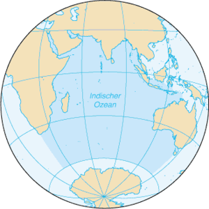
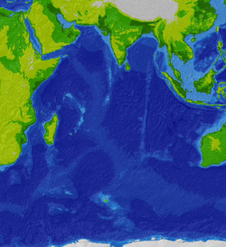

Oceanul Indian este al treilea ocean ca mărime din lume. Acoperă aproximativ 20% din suprafața oceanică a Pământului, are o suprafață de 73.556.000 km² iar volumul oceanului este estimat la 292.131.000 km³.
Este mărginit în nord de subcontinentul Indian, în vest de Peninsula Arabică și Africa, în est de Malaezia, Insulele Sunda și de Australia și în sud de Oceanul Antarctic. Cel mai mare fluviu care se varsă în Oceanul Indian este fluviul african Zambezi.
Morfologia reliefului submarin
Pe fundul Oceanului Indian se află dorsala subacvatică central-indiană cu o direcție nord-sud, praguri și gropi de diverse adâncimi. Între aceste gropi se numără Groapa Sunda cu o adâncime maximă de 7455 m și Groapa Diamantelor cu o adâncime maximă de 8047 m, aceasta fiind adâncimea maximă a Oceanului Indian.
Mări ce aparțin de Oceanul Indian
Mările și golfurile ce aparțin de acest ocean sunt: Marea Andaman, Marea Arabiei, Golful Bengal, Marele Golf Australian, Golful Aden, Golful Oman, Strâmtoarea Mozambicului, Golful Persic, Marea Roșie și Strâmtoarea Malakka.
Insule
Amindive
Andaman
Ashmore și Cartier
Chagos
Insula Christmas
Cocos
Comore
Heard și McDonald
Indonezia
Kerguelen
Laccadive
Madagascar
Maldive
Mauritius
Mayotte
Minicoy
Nicobar
Pemba
Phuket
Rodriguez
Réunion
Seychelles
Insula Socotra
Sri Lanka
Zanzibar
Porturi
Epicentrumul cutremurului 2004
Chennai (India)
Colombo (Sri Lanka)
Dar es Salaam (Tansania)
Durban (Africa de Sud)
East London (Africa de Sud)
Jakarta (Indonezia)
Kolkata (India)
Melbourne (Australia)
Mombasa (Kenia)
Mumbai (India)
Perth (Australia)
Richards Bay (Africa de Sud)
Cutremure
Oceanul este bântuit de cutremure ca de exemplu mai recent la data de 26 decembrie 2004 a avut loc un cutremur cu intensitatea de 9,2 pe scara Richter, având epicentrul în apropiere de insula Sumatra cu coordonatele 3°33' Lat.N/95°8' Long.E.
Acest cutremur submarin a declanșat valuri uriașe cu o viteză de 500 km/h numite Tsunami, producând în Indonezia, Tailanda, India și Sri Lanka un număr de peste 300.000 de victime omenești.